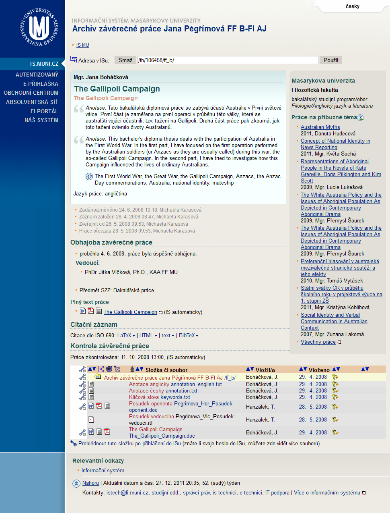

Test class: tests.AgendaLide
Test method: Checks name and topic for block of information: Theses - Supervisor.
Parameters: tests.AgendaLide$SupervisorTabData@e7c4ef, File: .\data\supervisorTabData.xls, Row: 3
Show output Show all outputs
 | Failure on page (title, link): Archiv závìreèné práce Jana Ságlová FF B-FI AJ /ff_b/ http://is.muni.cz/th/215719/ff_b/?lang=cs Screenshot saved at: ../../test-reports/screenshots/2011-12-27-20-34-19-screenshot-0.png (local link, preview image) ../artifact/testng/test-reports/screenshots/2011-12-27-20-34-19-screenshot-0.png (Jenkins link) |
|  | Failure on page (title, link): Archiv závìreèné práce Jana Pìgøímová FF B-FI AJ /ff_b/ http://is.muni.cz/th/106458/ff_b/?lang=cs Screenshot saved at: ../../test-reports/screenshots/2011-12-27-20-35-02-screenshot-1.png (local link, preview image) ../artifact/testng/test-reports/screenshots/2011-12-27-20-35-02-screenshot-1.png (Jenkins link) |
 | Failure on page (title, link): Archiv závìreèné práce Eva Kluková FF M-FI AJ /ff_m/ http://is.muni.cz/th/65075/ff_m/?lang=cs Screenshot saved at: ../../test-reports/screenshots/2011-12-27-20-35-40-screenshot-2.png (local link, preview image) ../artifact/testng/test-reports/screenshots/2011-12-27-20-35-40-screenshot-2.png (Jenkins link) |
 | Failure on page (title, link): Archiv závìreèné práce Štìpánka Benešová FF M-FI AJ /ff_m/ http://is.muni.cz/th/15316/ff_m/?lang=cs Screenshot saved at: ../../test-reports/screenshots/2011-12-27-20-35-53-screenshot-3.png (local link, preview image) ../artifact/testng/test-reports/screenshots/2011-12-27-20-35-53-screenshot-3.png (Jenkins link) |
FAILURE
checkRoleThesesReader at [2011-12-27 20:35:55] with invocation order 0
tests.AgendaLide.checkRoleThesesReader(tests.AgendaLide$SupervisorTabData, java.lang.String, java.lang.String)
Checks name and topic for block of information: Theses - Reader.
Show/Hide test method steps
tests.AgendaLide.checkRoleThesesReader(tests.AgendaLide$SupervisorTabData, java.lang.String, java.lang.String)
Checks name and topic for block of information: Theses - Reader.
Show/Hide test method steps
java.lang.Throwable: Multiple failures (4): Failure 1 of 4: java.lang.AssertionError: Failure on page (title, link): Archiv závìreèné práce Jana Ságlová FF B-FI AJ /ff_b/ http://is.muni.cz/th/215719/ff_b/?lang=cs Additional information: Verify that "css=h1#nadpis" contains "Archiv závìreèné práce Jana Havelková" expected:<true> but was:<false> at org.testng.Assert.fail(Assert.java:89) at org.testng.Assert.failNotEquals(Assert.java:480) at org.testng.Assert.assertTrue(Assert.java:37) at tests.TestBase.assertTrue(TestBase.java:232) at tests.TestBase.verifyTrue(TestBase.java:284) at tests.AgendaLide.checkRoleThesesSupervisor(AgendaLide.java:407) at sun.reflect.NativeMethodAccessorImpl.invoke0(Native Method) at sun.reflect.NativeMethodAccessorImpl.invoke(NativeMethodAccessorImpl.java:57) at sun.reflect.DelegatingMethodAccessorImpl.invoke(DelegatingMethodAccessorImpl.java:43) at java.lang.reflect.Method.invoke(Method.java:601) at org.testng.internal.MethodInvocationHelper.invokeMethod(MethodInvocationHelper.java:76) at org.testng.internal.Invoker.invokeMethod(Invoker.java:673) at org.testng.internal.Invoker.invokeTestMethod(Invoker.java:846) at org.testng.internal.Invoker.invokeTestMethods(Invoker.java:1170) at org.testng.internal.TestMethodWorker.invokeTestMethods(TestMethodWorker.java:125) at org.testng.internal.TestMethodWorker.run(TestMethodWorker.java:109) at org.testng.TestRunner.runWorkers(TestRunner.java:1147) at org.testng.TestRunner.privateRun(TestRunner.java:749) at org.testng.TestRunner.run(TestRunner.java:600) at org.testng.SuiteRunner.runTest(SuiteRunner.java:317) at org.testng.SuiteRunner.runSequentially(SuiteRunner.java:312) at org.testng.SuiteRunner.privateRun(SuiteRunner.java:274) at org.testng.SuiteRunner.run(SuiteRunner.java:223) at org.testng.SuiteRunnerWorker.runSuite(SuiteRunnerWorker.java:52) at org.testng.SuiteRunnerWorker.run(SuiteRunnerWorker.java:86) at org.testng.TestNG.runSuitesSequentially(TestNG.java:1039) at org.testng.TestNG.runSuitesSequentially(TestNG.java:1035) at org.testng.TestNG.runSuitesLocally(TestNG.java:964) at org.testng.TestNG.run(TestNG.java:900) at org.testng.TestNG.privateMain(TestNG.java:1182) at org.testng.TestNG.main(TestNG.java:1146) Failure 2 of 4: java.lang.AssertionError: Failure on page (title, link): Archiv závìreèné práce Jana Pìgøímová FF B-FI AJ /ff_b/ http://is.muni.cz/th/106458/ff_b/?lang=cs Additional information: Verify that "css=h1#nadpis" contains "Archiv závìreèné práce Jana Boháèková" expected:<true> but was:<false> at org.testng.Assert.fail(Assert.java:89) at org.testng.Assert.failNotEquals(Assert.java:480) at org.testng.Assert.assertTrue(Assert.java:37) at tests.TestBase.assertTrue(TestBase.java:232) at tests.TestBase.verifyTrue(TestBase.java:284) at tests.AgendaLide.checkRoleThesesSupervisor(AgendaLide.java:407) at sun.reflect.NativeMethodAccessorImpl.invoke0(Native Method) at sun.reflect.NativeMethodAccessorImpl.invoke(NativeMethodAccessorImpl.java:57) at sun.reflect.DelegatingMethodAccessorImpl.invoke(DelegatingMethodAccessorImpl.java:43) at java.lang.reflect.Method.invoke(Method.java:601) at org.testng.internal.MethodInvocationHelper.invokeMethod(MethodInvocationHelper.java:76) at org.testng.internal.Invoker.invokeMethod(Invoker.java:673) at org.testng.internal.Invoker.invokeTestMethod(Invoker.java:846) at org.testng.internal.Invoker.invokeTestMethods(Invoker.java:1170) at org.testng.internal.TestMethodWorker.invokeTestMethods(TestMethodWorker.java:125) at org.testng.internal.TestMethodWorker.run(TestMethodWorker.java:109) at org.testng.TestRunner.runWorkers(TestRunner.java:1147) at org.testng.TestRunner.privateRun(TestRunner.java:749) at org.testng.TestRunner.run(TestRunner.java:600) at org.testng.SuiteRunner.runTest(SuiteRunner.java:317) at org.testng.SuiteRunner.runSequentially(SuiteRunner.java:312) at org.testng.SuiteRunner.privateRun(SuiteRunner.java:274) at org.testng.SuiteRunner.run(SuiteRunner.java:223) at org.testng.SuiteRunnerWorker.runSuite(SuiteRunnerWorker.java:52) at org.testng.SuiteRunnerWorker.run(SuiteRunnerWorker.java:86) at org.testng.TestNG.runSuitesSequentially(TestNG.java:1039) at org.testng.TestNG.runSuitesSequentially(TestNG.java:1035) at org.testng.TestNG.runSuitesLocally(TestNG.java:964) at org.testng.TestNG.run(TestNG.java:900) at org.testng.TestNG.privateMain(TestNG.java:1182) at org.testng.TestNG.main(TestNG.java:1146) Failure 3 of 4: java.lang.AssertionError: Failure on page (title, link): Archiv závìreèné práce Eva Kluková FF M-FI AJ /ff_m/ http://is.muni.cz/th/65075/ff_m/?lang=cs Additional information: Verify that "css=h1#nadpis" contains "Archiv závìreèné práce Eva Lukáèová" expected:<true> but was:<false> at org.testng.Assert.fail(Assert.java:89) at org.testng.Assert.failNotEquals(Assert.java:480) at org.testng.Assert.assertTrue(Assert.java:37) at tests.TestBase.assertTrue(TestBase.java:232) at tests.TestBase.verifyTrue(TestBase.java:284) at tests.AgendaLide.checkRoleThesesSupervisor(AgendaLide.java:407) at sun.reflect.NativeMethodAccessorImpl.invoke0(Native Method) at sun.reflect.NativeMethodAccessorImpl.invoke(NativeMethodAccessorImpl.java:57) at sun.reflect.DelegatingMethodAccessorImpl.invoke(DelegatingMethodAccessorImpl.java:43) at java.lang.reflect.Method.invoke(Method.java:601) at org.testng.internal.MethodInvocationHelper.invokeMethod(MethodInvocationHelper.java:76) at org.testng.internal.Invoker.invokeMethod(Invoker.java:673) at org.testng.internal.Invoker.invokeTestMethod(Invoker.java:846) at org.testng.internal.Invoker.invokeTestMethods(Invoker.java:1170) at org.testng.internal.TestMethodWorker.invokeTestMethods(TestMethodWorker.java:125) at org.testng.internal.TestMethodWorker.run(TestMethodWorker.java:109) at org.testng.TestRunner.runWorkers(TestRunner.java:1147) at org.testng.TestRunner.privateRun(TestRunner.java:749) at org.testng.TestRunner.run(TestRunner.java:600) at org.testng.SuiteRunner.runTest(SuiteRunner.java:317) at org.testng.SuiteRunner.runSequentially(SuiteRunner.java:312) at org.testng.SuiteRunner.privateRun(SuiteRunner.java:274) at org.testng.SuiteRunner.run(SuiteRunner.java:223) at org.testng.SuiteRunnerWorker.runSuite(SuiteRunnerWorker.java:52) at org.testng.SuiteRunnerWorker.run(SuiteRunnerWorker.java:86) at org.testng.TestNG.runSuitesSequentially(TestNG.java:1039) at org.testng.TestNG.runSuitesSequentially(TestNG.java:1035) at org.testng.TestNG.runSuitesLocally(TestNG.java:964) at org.testng.TestNG.run(TestNG.java:900) at org.testng.TestNG.privateMain(TestNG.java:1182) at org.testng.TestNG.main(TestNG.java:1146) Failure 4 of 4: java.lang.AssertionError: Failure on page (title, link): Archiv závìreèné práce Štìpánka Benešová FF M-FI AJ /ff_m/ http://is.muni.cz/th/15316/ff_m/?lang=cs Additional information: Verify that "css=h1#nadpis" contains "Archiv závìreèné práce Štìpánka Dubinová" expected:<true> but was:<false> at org.testng.Assert.fail(Assert.java:89) at org.testng.Assert.failNotEquals(Assert.java:480) at org.testng.Assert.assertTrue(Assert.java:37) at tests.TestBase.assertTrue(TestBase.java:232) at tests.TestBase.verifyTrue(TestBase.java:284) at tests.AgendaLide.checkRoleThesesSupervisor(AgendaLide.java:407) at sun.reflect.NativeMethodAccessorImpl.invoke0(Native Method) at sun.reflect.NativeMethodAccessorImpl.invoke(NativeMethodAccessorImpl.java:57) at sun.reflect.DelegatingMethodAccessorImpl.invoke(DelegatingMethodAccessorImpl.java:43) at java.lang.reflect.Method.invoke(Method.java:601) at org.testng.internal.MethodInvocationHelper.invokeMethod(MethodInvocationHelper.java:76) at org.testng.internal.Invoker.invokeMethod(Invoker.java:673) at org.testng.internal.Invoker.invokeTestMethod(Invoker.java:846) at org.testng.internal.Invoker.invokeTestMethods(Invoker.java:1170) at org.testng.internal.TestMethodWorker.invokeTestMethods(TestMethodWorker.java:125) at org.testng.internal.TestMethodWorker.run(TestMethodWorker.java:109) at org.testng.TestRunner.runWorkers(TestRunner.java:1147) at org.testng.TestRunner.privateRun(TestRunner.java:749) at org.testng.TestRunner.run(TestRunner.java:600) at org.testng.SuiteRunner.runTest(SuiteRunner.java:317) at org.testng.SuiteRunner.runSequentially(SuiteRunner.java:312) at org.testng.SuiteRunner.privateRun(SuiteRunner.java:274) at org.testng.SuiteRunner.run(SuiteRunner.java:223) at org.testng.SuiteRunnerWorker.runSuite(SuiteRunnerWorker.java:52) at org.testng.SuiteRunnerWorker.run(SuiteRunnerWorker.java:86) at org.testng.TestNG.runSuitesSequentially(TestNG.java:1039) at org.testng.TestNG.runSuitesSequentially(TestNG.java:1035) at org.testng.TestNG.runSuitesLocally(TestNG.java:964) at org.testng.TestNG.run(TestNG.java:900) at org.testng.TestNG.privateMain(TestNG.java:1182) at org.testng.TestNG.main(TestNG.java:1146)
java.lang.Throwable: Multiple failures (4): Failure 1 of 4: java.lang.AssertionError: Failure on page (title, link): Archiv závìreèné práce Jana Ságlová FF B-FI AJ /ff_b/ http://is.muni.cz/th/215719/ff_b/?lang=cs Additional information: Verify that "css=h1#nadpis" contains "Archiv závìreèné práce Jana Havelková" expected:<true> but was:<false> at org.testng.Assert.fail(Assert.java:89) at org.testng.Assert.failNotEquals(Assert.java:480) at org.testng.Assert.assertTrue(Assert.java:37) at tests.TestBase.assertTrue(TestBase.java:232) at tests.TestBase.verifyTrue(TestBase.java:284) at tests.AgendaLide.checkRoleThesesSupervisor(AgendaLide.java:407) at sun.reflect.NativeMethodAccessorImpl.invoke0(Native Method) at sun.reflect.NativeMethodAccessorImpl.invoke(NativeMethodAccessorImpl.java:57) at sun.reflect.DelegatingMethodAccessorImpl.invoke(DelegatingMethodAccessorImpl.java:43) at java.lang.reflect.Method.invoke(Method.java:601) at org.testng.internal.MethodInvocationHelper.invokeMethod(MethodInvocationHelper.java:76) at org.testng.internal.Invoker.invokeMethod(Invoker.java:673) at org.testng.internal.Invoker.invokeTestMethod(Invoker.java:846) at org.testng.internal.Invoker.invokeTestMethods(Invoker.java:1170) at org.testng.internal.TestMethodWorker.invokeTestMethods(TestMethodWorker.java:125) at org.testng.internal.TestMethodWorker.run(TestMethodWorker.java:109) at org.testng.TestRunner.runWorkers(TestRunner.java:1147) at org.testng.TestRunner.privateRun(TestRunner.java:749) at org.testng.TestRunner.run(TestRunner.java:600) at org.testng.SuiteRunner.runTest(SuiteRunner.java:317) at org.testng.SuiteRunner.runSequentially(SuiteRunner.java:312) at org.testng.SuiteRunner.privateRun(SuiteRunner.java:274) at org.testng.SuiteRunner.run(SuiteRunner.java:223) at org.testng.SuiteRunnerWorker.runSuite(SuiteRunnerWorker.java:52) at org.testng.SuiteRunnerWorker.run(SuiteRunnerWorker.java:86) at org.testng.TestNG.runSuitesSequentially(TestNG.java:1039) at org.testng.TestNG.runSuitesSequentially(TestNG.java:1035) at org.testng.TestNG.runSuitesLocally(TestNG.java:964) at org.testng.TestNG.run(TestNG.java:900) at org.testng.TestNG.privateMain(TestNG.java:1182) at org.testng.TestNG.main(TestNG.java:1146) Failure 2 of 4: java.lang.AssertionError: Failure on page (title, link): Archiv závìreèné práce Jana Pìgøímová FF B-FI AJ /ff_b/ http://is.muni.cz/th/106458/ff_b/?lang=cs Additional information: Verify that "css=h1#nadpis" contains "Archiv závìreèné práce Jana Boháèková" expected:<true> but was:<false> at org.testng.Assert.fail(Assert.java:89) at org.testng.Assert.failNotEquals(Assert.java:480) at org.testng.Assert.assertTrue(Assert.java:37) at tests.TestBase.assertTrue(TestBase.java:232) at tests.TestBase.verifyTrue(TestBase.java:284) at tests.AgendaLide.checkRoleThesesSupervisor(AgendaLide.java:407) at sun.reflect.NativeMethodAccessorImpl.invoke0(Native Method) at sun.reflect.NativeMethodAccessorImpl.invoke(NativeMethodAccessorImpl.java:57) at sun.reflect.DelegatingMethodAccessorImpl.invoke(DelegatingMethodAccessorImpl.java:43) at java.lang.reflect.Method.invoke(Method.java:601) at org.testng.internal.MethodInvocationHelper.invokeMethod(MethodInvocationHelper.java:76) at org.testng.internal.Invoker.invokeMethod(Invoker.java:673) at org.testng.internal.Invoker.invokeTestMethod(Invoker.java:846) at org.testng.internal.Invoker.invokeTestMethods(Invoker.java:1170) at org.testng.internal.TestMethodWorker.invokeTestMethods(TestMethodWorker.java:125) at org.testng.internal.TestMethodWorker.run(TestMethodWorker.java:109) at org.testng.TestRunner.runWorkers(TestRunner.java:1147) at org.testng.TestRunner.privateRun(TestRunner.java:749) at org.testng.TestRunner.run(TestRunner.java:600) at org.testng.SuiteRunner.runTest(SuiteRunner.java:317) at org.testng.SuiteRunner.runSequentially(SuiteRunner.java:312) at org.testng.SuiteRunner.privateRun(SuiteRunner.java:274) at org.testng.SuiteRunner.run(SuiteRunner.java:223) at org.testng.SuiteRunnerWorker.runSuite(SuiteRunnerWorker.java:52) at org.testng.SuiteRunnerWorker.run(SuiteRunnerWorker.java:86) at org.testng.TestNG.runSuitesSequentially(TestNG.java:1039) at org.testng.TestNG.runSuitesSequentially(TestNG.java:1035) at org.testng.TestNG.runSuitesLocally(TestNG.java:964) at org.testng.TestNG.run(TestNG.java:900) at org.testng.TestNG.privateMain(TestNG.java:1182) at org.testng.TestNG.main(TestNG.java:1146) Failure 3 of 4: java.lang.AssertionError: Failure on page (title, link): Archiv závìreèné práce Eva Kluková FF M-FI AJ /ff_m/ http://is.muni.cz/th/65075/ff_m/?lang=cs Additional information: Verify that "css=h1#nadpis" contains "Archiv závìreèné práce Eva Lukáèová" expected:<true> but was:<false> at org.testng.Assert.fail(Assert.java:89) at org.testng.Assert.failNotEquals(Assert.java:480) at org.testng.Assert.assertTrue(Assert.java:37) at tests.TestBase.assertTrue(TestBase.java:232) at tests.TestBase.verifyTrue(TestBase.java:284) at tests.AgendaLide.checkRoleThesesSupervisor(AgendaLide.java:407) at sun.reflect.NativeMethodAccessorImpl.invoke0(Native Method) at sun.reflect.NativeMethodAccessorImpl.invoke(NativeMethodAccessorImpl.java:57) at sun.reflect.DelegatingMethodAccessorImpl.invoke(DelegatingMethodAccessorImpl.java:43) at java.lang.reflect.Method.invoke(Method.java:601) at org.testng.internal.MethodInvocationHelper.invokeMethod(MethodInvocationHelper.java:76) at org.testng.internal.Invoker.invokeMethod(Invoker.java:673) at org.testng.internal.Invoker.invokeTestMethod(Invoker.java:846) at org.testng.internal.Invoker.invokeTestMethods(Invoker.java:1170) at org.testng.internal.TestMethodWorker.invokeTestMethods(TestMethodWorker.java:125) at org.testng.internal.TestMethodWorker.run(TestMethodWorker.java:109) at org.testng.TestRunner.runWorkers(TestRunner.java:1147) at org.testng.TestRunner.privateRun(TestRunner.java:749) at org.testng.TestRunner.run(TestRunner.java:600) at org.testng.SuiteRunner.runTest(SuiteRunner.java:317) at org.testng.SuiteRunner.runSequentially(SuiteRunner.java:312) at org.testng.SuiteRunner.privateRun(SuiteRunner.java:274) at org.testng.SuiteRunner.run(SuiteRunner.java:223) at org.testng.SuiteRunnerWorker.runSuite(SuiteRunnerWorker.java:52) at org.testng.SuiteRunnerWorker.run(SuiteRunnerWorker.java:86) at org.testng.TestNG.runSuitesSequentially(TestNG.java:1039) at org.testng.TestNG.runSuitesSequentially(TestNG.java:1035) at org.testng.TestNG.runSuitesLocally(TestNG.java:964) at org.testng.TestNG.run(TestNG.java:900) at org.testng.TestNG.privateMain(TestNG.java:1182) at org.testng.TestNG.main(TestNG.java:1146) Failure 4 of 4: java.lang.AssertionError: Failure on page (title, link): Archiv závìreèné práce Štìpánka Benešová FF M-FI AJ /ff_m/ http://is.muni.cz/th/15316/ff_m/?lang=cs Additional information: Verify that "css=h1#nadpis" contains "Archiv závìreèné práce Štìpánka Dubinová" expected:<true> but was:<false> at org.testng.Assert.fail(Assert.java:89) at org.testng.Assert.failNotEquals(Assert.java:480) at org.testng.Assert.assertTrue(Assert.java:37) at tests.TestBase.assertTrue(TestBase.java:232) at tests.TestBase.verifyTrue(TestBase.java:284) at tests.AgendaLide.checkRoleThesesSupervisor(AgendaLide.java:407) at sun.reflect.NativeMethodAccessorImpl.invoke0(Native Method) at sun.reflect.NativeMethodAccessorImpl.invoke(NativeMethodAccessorImpl.java:57) at sun.reflect.DelegatingMethodAccessorImpl.invoke(DelegatingMethodAccessorImpl.java:43) at java.lang.reflect.Method.invoke(Method.java:601) at org.testng.internal.MethodInvocationHelper.invokeMethod(MethodInvocationHelper.java:76) at org.testng.internal.Invoker.invokeMethod(Invoker.java:673) at org.testng.internal.Invoker.invokeTestMethod(Invoker.java:846) at org.testng.internal.Invoker.invokeTestMethods(Invoker.java:1170) at org.testng.internal.TestMethodWorker.invokeTestMethods(TestMethodWorker.java:125) at org.testng.internal.TestMethodWorker.run(TestMethodWorker.java:109) at org.testng.TestRunner.runWorkers(TestRunner.java:1147) at org.testng.TestRunner.privateRun(TestRunner.java:749) at org.testng.TestRunner.run(TestRunner.java:600) at org.testng.SuiteRunner.runTest(SuiteRunner.java:317) at org.testng.SuiteRunner.runSequentially(SuiteRunner.java:312) at org.testng.SuiteRunner.privateRun(SuiteRunner.java:274) at org.testng.SuiteRunner.run(SuiteRunner.java:223) at org.testng.SuiteRunnerWorker.runSuite(SuiteRunnerWorker.java:52) at org.testng.SuiteRunnerWorker.run(SuiteRunnerWorker.java:86) at org.testng.TestNG.runSuitesSequentially(TestNG.java:1039) at org.testng.TestNG.runSuitesSequentially(TestNG.java:1035) at org.testng.TestNG.runSuitesLocally(TestNG.java:964) at org.testng.TestNG.run(TestNG.java:900) at org.testng.TestNG.privateMain(TestNG.java:1182) at org.testng.TestNG.main(TestNG.java:1146)